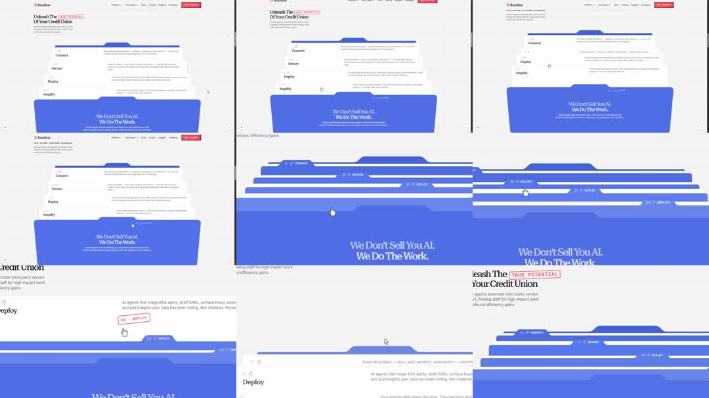

Folder component: Rankine's landing page turns its process into a stack of physical file folders - as you scroll, full-width blue folder sheets (numbered red-stamp tabs '01 CONNECT', '02 SECURE', '03 DEPLOY', '04 AMPLIFY') pile up like a manila-folder stack, each tab peeking above the previous sheet; the top sheet carries the pitch 'We Don't Sell You AI. We Do The Work.'; hero above: 'Unleash The TRUE POTENTIAL Of Your Credit Union'.
Media
Frame-by-frame

0-20%
Page top: hero headline with 'TRUE POTENTIAL' stamped in red outline; the folder stack sits below showing Connect/Secure/Deploy/Amplify rows expanded like an accordion list.
20-50%
Scroll: the sections collapse upward and convert into folder tabs - each blue sheet slides up, its stamped tab (01 CONNECT ... 04 AMPLIFY) docking into the stack with perspective gaps.
50-80%
The stack compresses into a neat deck of 4 staggered tabs on the big blue front sheet with white headline.
80-100%
Tabs can be pulled: a sheet slides down/forward to reveal its section copy ('Deploy' paragraph visible); scroll continues to footer CTA.
Build prompt
Rebuild this interaction 1:1: a folder component - Rankine's landing page turns its process into a stack of physical file folders. As you scroll, full-width blue folder sheets (numbered red-stamp tabs "01 CONNECT", "02 SECURE", "03 DEPLOY", "04 AMPLIFY") pile up like a manila-folder stack, each tab peeking above the previous sheet; the top sheet carries the pitch "We Don't Sell You AI. We Do The Work." Hero above: "Unleash The TRUE POTENTIAL Of Your Credit Union".
## Stack
React + TypeScript + Tailwind. Scroll-linked (sticky section, per-sheet translateY scrub); tab open as a tween. Animate transform and opacity only.
## Scene
Hero with "TRUE POTENTIAL" stamped in red outline. Below: 4 full-width blue sheets with rounded corners and red-stamped tab labels; a big blue front sheet with the white pitch headline; stacked tabs show perspective gaps like paper.
## Motion spec
Pattern: scroll-scrubbed stacking + tab pull-out.
- Scrolling: the expanded sections collapse upward and convert into folder tabs - each blue sheet slides up (scroll-scrubbed, linear), its stamped tab docking into the stack with perspective gaps.
- The stack compresses into a neat deck of 4 staggered tabs on the big front sheet.
- Tab click/pull: the sheet slides down/forward to reveal its section copy (500ms ease-out); scrolling continues to the footer CTA.
## Calibration
- Sheet motion is scrub-linear with the scroll - direct, no easing; the stacking must track the scrollbar exactly.
- Perspective gaps between docked tabs (slight scale/offset decrements) are what read as a physical stack.
- Tab pull-out 500ms ease-out; the sheet should feel lifted off the deck.
## Reduced motion
Sections stack with simple 150ms fades as they enter; tabs open with a 200ms slide.
## Don't miss
- Red rubber-stamp treatment on the tab labels AND "TRUE POTENTIAL" - the stamp is the brand voice.
- Sheets are full-width and rounded like real folder stock, blue like blueprint paper.
- The deck's final composition (4 staggered tabs + pitch headline) must read as one designed object.